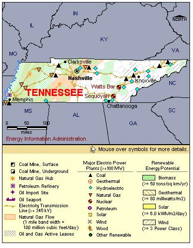

State Overview
There are two operating nuclear power plants in Tennessee:
Sequoyah in Hamilton County
- The four old steam generators at Sequoyah were removed in April 2003 and replaced in the following month.
- The electric generators were designed by Westinghouse-CE Nuclear Power in Chattanooga, Tennessee, and fabricated by Dooson in Changwon, South Korea.
Watts Bar in Rhea County
- Watts Bar, which began operations May 27, 1996, was the last new reactor to go on line.
Contribution of Nuclear Power
Tennessee has over 3,000 MW of nuclear capacity, making it one of the 15 largest states in terms of nuclear power.
Although nuclear power accounts for only 16% of Tennessee’s electric capacity, it produces almost 30% of the State’s electricity.
Tennessee imports over 15% of its electricity.
License Renewals
- Sequoyah: The original operating license for Sequoyah unit 1 expires September 2020. The operating license for unit 2 expires September 2021. A renewal application has not yet been filed.
- Watts Bar: The current license for Watts Bar unit 1 expires November 2035. A renewal application has not yet been filed.
New Applications
- Watts Bar: On August 2, 2007, the Tennessee Valley Authority announced plans to complete construction of Watts Bar Unit 2, a project which had been on hold since 1973. The unit could begin power generation as early as 2012.

|
| Tennessee Total Electric Power Industry, Summer Capacity and Net Generation, by Energy Source, 2008 |
| Primary Energy Source |
Summer Capacity
(MW) |
Share of State Total
(Percent) |
Net Generation
(Thousand MWh) |
Share of State Total
(Percent) |
| Nuclear |
3,397 |
16.3 |
27,030 |
29.8 |
| Coal |
8,841 |
42.3 |
57,058 |
62.9 |
| Hydro and Pumped Storage |
4,292 |
20.5 |
4,907 |
5.4 |
| Natural Gas |
4,101 |
19.6 |
467 |
0.5 |
| Other1 |
- |
- |
20 |
* |
| Other Renewable1 |
203 |
1.0 |
965 |
1.1 |
| Petroleum |
58 |
0.3 |
216 |
0.2 |
| Total |
20,891 |
100.0 |
90,663 |
100.0 |
|
|
|
|
|
| Tennessee Nuclear Power Plants, Summer Capacity and Net Generation, 2008 |
| Plant Name/Total Reactors |
Summer Capacity
(MW) |
Net Generation
(Thousand MWh) |
Share of State Nuclear
Net Generation
(Percent) |
Owner |
Sequoyah
Unit 1, Unit 2 |
2,274 |
18,917 |
70.0 |
Tennessee Valley Authority |
Watts Bar Nuclear Plant
Unit 1 |
1,123 |
8,112 |
30.0 |
Tennessee Valley Authority |
2 Plants
3 Reactors |
3,397 |
27,030 |
100.0 |
|
Plant Profiles
Sequoyah Nuclear Power Plant
| Sequoyah |
| Unit |
Summer Capacity
(MW) |
Net Generation
(Thousand MWh) |
Summer Capacity Factor
(Percent) |
Type |
Commercial Operation Date |
License Expiration Date |
| 1 |
1,148 |
10,165 |
101.1 |
PWR |
7/1/1981 |
9/17/2020 |
| 2 |
1,126 |
8,753 |
88.7 |
PWR |
6/1/1982 |
9/15/2021 |
| |
2,274 |
18,917 |
95.0 |
|
|
|
Operator: Tennessee Valley Authority (TVA)
Location and Service Territory: The Sequoyah nuclear power plant is located on a 525-acre site near Chattanooga, Tennessee.
Construction Cost: $3.455 billion (2007 USD)
Staffing: The staff consists of 900 employees; however, up to 800 additional contractors may be brought on for refueling and maintenance outages.
Reactor Descriptions: The plant houses two, Westinghouse four-loop pressurized water reactors. Each reactor holds 193 fuel assemblies.
Cooling System: The cooling system uses a natural draft cooling tower that draws water from the Chickamauga Reservoir.
Watts Bar Nuclear Plant
| Watts Bar Nuclear Plant |
| Unit |
Summer Capacity
(MW) |
Net Generation
(Thousand MWh) |
Summer Capacity Factor
(Percent) |
Type |
Commercial Operation Date |
License Expiration Date |
| 1 |
1,123 |
8,112 |
82.5 |
PWR |
5/27/1996 |
11/9/2035 |
| |
1,123 |
8,112 |
82.5 |
|
|
|
Operator: Tennessee Valley Authority (TVA)
Location and Service Territory: The Watts Bar Nuclear Plant is located on the Tennessee River in Rhea County, Tennessee. The site covers 1,770 acres.
Staffing: Approximately 620 employees work at Unit 1.
Reactor Description: Unit 1 is a Westinghouse four-loop pressurized water reactor and houses 193 fuel assemblies.
Cooling System: Watts Bar draws cooling water from Chickamauga Reservoir and evaporates it via a natural draft cooling tower.
see also:
more annual nuclear statistics
projected electricity capacity to 2035
international
electricity statistics |
|